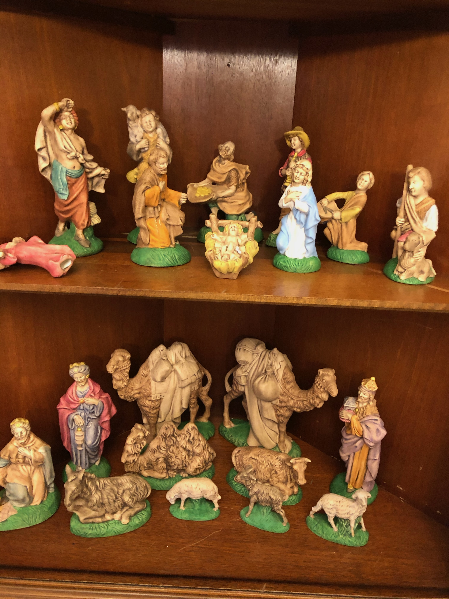
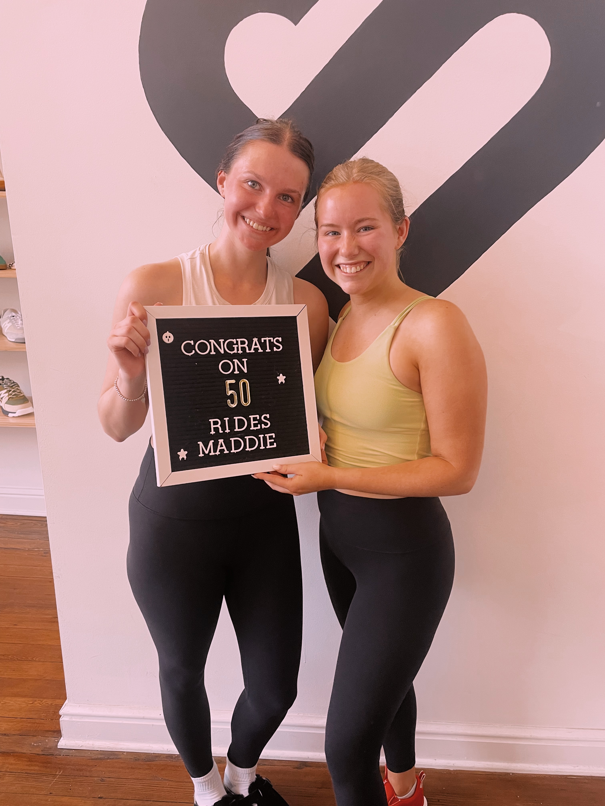

Madison's Hobbies
Home
|
About
|
Hobbies
Gallery of Madison's Hobbies

Maddie loves collecting and painting new ceramic pieces. Her favorite time to paint is around Christmas!

Maddie and her best friend at Spin Class!
A beautiful flower bouquet Maddie loves to make in her free time!